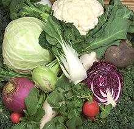

Thanking for Sustenance
We are of the Earth and embedded within it, but we are of the Animal Kingdom,
and have no choice but to sustain our lives at cost to other beings. Some
foods are offered by plants as their means of propagating their kind, but most
of our sustenance comes by taking the lives of other beings.
Plants too have awareness, so even being Vegan doesn't get
us off the hook. What we can do, and must do, is to be respectful and thankful
for what we must take - it is the Pagan thing to do. Here below is a simple
ritual that can be used at the dinner table or any other appropriate time.
It can be voiced, or recited silently.
You should, while reciting your thanks, be visualizing the
living beings that have provided the food that is before you. It is usually
impossible to visualize them all during so short a ritual, but at least the
major ones. This ritual is my own work, and I contribute it to the Public
Domain.
If your mind wanders during the ritual, start over


Paganism

Contact
|
|
|
Personal
I give my blessing to this food in thanks
To all the living beings that have brought it to me
That I may be healthy and strong.
That I may heal my wounds and continue my work.
Again, I give my blessing and my thanks.
And hope to be worthy of blessing in turn.
Group Leaders
We give our blessings to this food in thanks
To all the living beings that have brought it to us
That we may be healthy and strong.
That we may heal our wounds and continue our work.
Again, We give our blessings and our thanks.
And hope to be worthy of blessing in turn.
Disclaimer
 I am a largely Non-Theist Pagan, but have recently been doing some work
with Freya, who seems to be branching out from her Germanic roots -
note her very India style pose and Japanese companion (Shinto I presume).
It's all OK, since Vedic Hinduism originated from the same Proto
Indo-European root as Germanic Paganism.
I am a largely Non-Theist Pagan, but have recently been doing some work
with Freya, who seems to be branching out from her Germanic roots -
note her very India style pose and Japanese companion (Shinto I presume).
It's all OK, since Vedic Hinduism originated from the same Proto
Indo-European root as Germanic Paganism.
Andrew Grygus
|
Thanks01 201231 - www.clovegarden.com/pagan/
- All images not otherwise credited are Public Domain.
Andrew Grygus - eyes@clovegarden.com